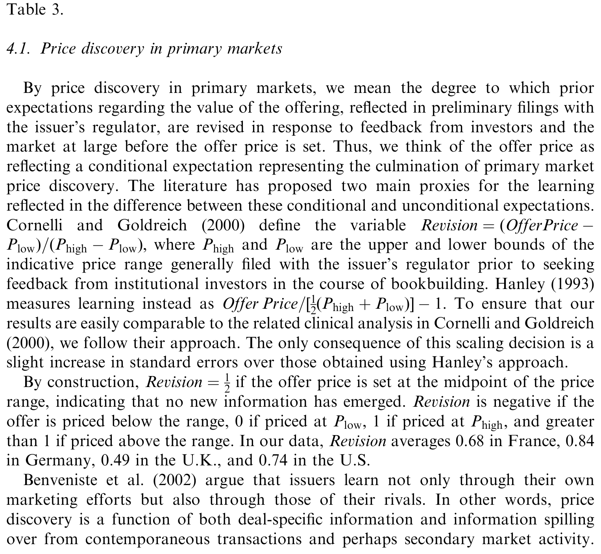
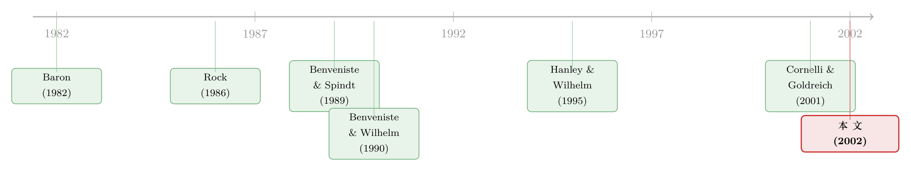

新股配售：是『偏心』，还是『有用的偏心』？
本文读的是 Ljungqvist & Wilhelm (2002, Journal of Financial Economics)：作者用一套横跨四国、把「配售—信息生产—初始收益」三件事一起估计的结构模型，回答了一个被监管层和学界争了二十年的问题——投行把新股大头分给机构投资者，到底是损人利己的「歧视」，还是替发行人省钱的「相机抉择」。他们的答案偏向后者：给投行配售自由，反而促进了一级市场的价格发现，降低了发行的间接成本。
1 一个让 SEC 坐不住的问题
先讲一个场景。2000 年 12 月 7 日，《华尔街日报》在头版（p. C1）抛出一则指控：投行在分配热门新股 (IPO) 的份额时，私下要求拿到配售的机构投资者，必须在二级市场上回购该股票，或者支付高得离谱的交易佣金。换句话说，那些看上去「白送」给机构的打折新股，其实并不白送——投行在暗中向每一个拿到份额的投资者，抽走一笔只有它自己知道的「全价」。
证监会 (SEC) 和曼哈顿的联邦检察官随即宣布立案调查，要查这种做法是否触犯了禁止「搭售 (tie-in)」的法规。问题的严重性在于：在美国乃至大多数司法辖区，公开发行中的显性价格歧视是被明令禁止的。可如果投行能借着「谁分多少」这件事，对每个投资者收取不同的隐性价码，那这不就是一种绕开禁令的、隐性的价格歧视吗？
于是，一个老问题被推到了风口浪尖：投行手里那点「想分给谁就分给谁」的配售自由裁量权 (allocation discretion)，到底是个好东西，还是个坏东西？
这正是本文标题里那个尖锐的二选一：Discriminatory or Discretionary?——是serving自己利益、损害发行人和其他投资者的「歧视」，还是在信息不对称下、最终让发行人受益的「相机抉择」？
2 一个全世界都成立的经验事实
要回答这个问题，得先把事实摆清楚。
「IPO 配售偏向机构投资者」——这件事在美国早已是常识，也有相当好的记录（Hanley and Wilhelm, 1995；Aggarwal et al., 2001）。本文的第一个贡献，是告诉你：这不是美国特色，而是全球现象。
作者攒了一个横跨 1990–2000 年、覆盖 37 个国家、1,032 宗 IPO 的庞大样本。结论干净利落：在投行拥有配售自由的地方，机构拿到的份额，平均下来差不多是散户的两到三倍。具体看几个数字——法国的 IPO 里机构拿走 76%；英国那些同时面向机构和散户的 IPO 里机构拿 73%；高盛承销的那一小撮美国 IPO 里机构拿 66%；德国略低，约 58%。在全部 1,689 宗有配售数据的 IPO 中，平均机构配售高达 80%（这个数字被大量英国「定向配售 placings」抬高了），剔除这些纯机构的定向配售后，均值落到 69%。
接着，一个自然的问题是：既然「偏向机构」是全球性的，那它到底是制度使然，还是人性使然？
这里出现了一个微妙的对照。在美国，配售是完全自由裁量的——几乎没有规则约束投行怎么分。而在美国之外，许多国家对配售自由设了五花八门的限制，可结果呢？至少在「机构拿大头」这个结果上，看起来和美国并没有两样。
这就尴尬了。如果连「捆住投行的手」都改变不了「机构拿大头」这个结局，那我们怎么判断这只手到底在做好事还是坏事？
3 两个针锋相对的故事
要给「自由裁量」定性，得先理解理论上它能干什么。文献里有两个方向完全相反的故事。
第一个故事，来自 Benveniste and Spindt (1989)。 在簿记建档 (bookbuilding) 这套机制里，投行在正式定价前，要向机构投资者询价，让它们提交非约束性的「认购意向 (indications of interest)」。这些意向，是投行确定发行价的信息基础。问题在于：机构凭什么说真话？如果我老老实实告诉你「这股票我很看好」，你只会把发行价定得更高，我的好处反而没了。所以理性的机构会装糊涂、压低意向。
Benveniste-Spindt 的洞见是：投行可以用配售自由来「买」机构的真话。我承诺，谁报价越积极、越透露真实需求，我就给谁分更多打折的新股。于是，「折价 (underpricing)」就不再是一笔无谓的损失，而是一份给信息生产者的报酬 (compensation)。这套逻辑被 Benveniste and Wilhelm (1990)、Sherman and Titman (2000) 进一步形式化。它给出的经验预测是清晰的：一旦限制配售自由，信息生产就会减少，发行人的预期净收益就会下降——因为投行被迫用「更多的折价」去替代「更大的机构配售」，来凑齐给机构的那份报酬包。
第二个故事，来自代理理论 (Baron, 1982)。 投行天天和机构投资者打交道，却只偶尔见一次发行人。这种长期关系的不对称，天然滋生一个代理问题：投行有动机去讨好机构，慷发行人之慨。Biais et al. (2002) 把这个想法做成模型——投行和机构合谋，从发行人身上榨取信息租金。按这个故事，配售自由就是一把伤害发行人的刀；我们应当预期，限制配售自由会减少折价，并且初始收益和机构配售之间会呈现一种「狼狈为奸」的正向关系（投行用更大的折价配售来讨好机构）。
你看，两个故事对同一组现象给出了符号完全相反的预测。这就是本文的全部张力所在：
- 若 Benveniste-Spindt 对：约束 → 信息生产↓ → 价格修正↓，初始收益与机构配售反向。
- 若代理故事对：约束 → 折价↓，初始收益与机构配售正向。
注意这里的精妙之处：两种理论都预测「机构拿大头」，所以光看配售比例，你永远分不清是哪个故事在起作用。要分清，必须把「配售」「价格发现」「初始收益」三件事放在一起看它们如何联动。这正是本文方法的出发点。
4 为什么必须是一个结构模型
到这一步，一个老练的读者会问：以往那么多 IPO 实证研究，难道没碰过这个问题吗？
碰过，但碰得不彻底。作者的批评相当直接：以往大多数检验是狭窄的、简化式 (reduced-form) 的，常常忽略了严重的内生性问题，而没有去检验机制设计视角所隐含的那套整体结构（Hanley, 1993 是早期的代表，Hanley and Wilhelm, 1995 则受限于只有一家投行的数据）。
问题出在哪？出在这三个变量——机构配售、价格修正、初始收益——是同时被决定的。机构配售多，可能是因为信息生产多；信息生产多，又会推动价格修正；价格修正和初始收益之间，又有 Hanley (1993) 那个著名的「部分调整 (partial adjustment)」关系。你单拎出任何一条做回归，系数都被其余两条的内生性污染了。
真正关键的一步在于：作者不再做单方程回归，而是估计一个把这三者作为联立内生变量的结构计量模型，让数据在一个自洽的框架里同时识别出配售政策、价格发现与初始收益之间的因果联动。
这个结构模型大致是一个三方程系统：
- 一条机构配售方程：机构拿到的份额，取决于发行特征以及——关键地——该国对配售自由施加了多少约束；
- 一条价格修正方程：最终发行价相对于事前「指示性价格区间 (indicative price range)」的偏离程度，作者把这个偏离当作信息生产 / 价格发现的代理变量（区间是投行在向机构问价之前定下的，最终价偏离得越多，说明问价过程中挤出来的信息越多）；
- 一条初始收益方程：上市首日的折价，如何同时被信息生产和机构配售所决定。
而要让这套模型「转得动」，需要一个东西：约束程度上的真实变异。这正是「跑到美国之外去」的意义——美国所有firm-commitment IPO 里投行都享有完全的配售自由，没有对照组（Cornelli and Goldreich, 2000, 2001 是少有的例外，但同样只有单家投行的数据）。而欧洲不一样：德国几乎和美国一样不设约束；澳大利亚走到另一个极端，默认就是固定价格、按比例 (pro rata) 配售；法国和英国则居于中间，发行人可以从一「菜单」的承销方式里挑选，投行受到形形色色的配售约束。
这种跨国的制度异质性，恰恰提供了识别所需的外生变异。作者把焦点收缩到四个国家——法国、德国、英国、美国——因为它们恰好覆盖了从「自由」到「受限」的整条光谱。（关于「让美国投行和美国投资者跨境流动如何重塑各国一级市场」，是这批作者另一篇姊妹研究的主题，参见《「七个点」也跨了国》。）
5 数据：把四个国家的配售簿一页页抄下来
结构模型再漂亮，也得有数据喂。而 IPO 配售数据的难处在于：很多国家（包括美国）压根不要求公开「股票分给了谁」。所以本文最辛苦、也最有价值的一块，是数据本身。
- 德国：样本期内 470 宗 IPO（377 宗簿记建档、92 宗固定价格、1 宗拍卖）。德国当时不强制披露，作者就直接给公司发问卷、向承销商和新闻稿要数据，最终拼出
144宗有配售数据的样本，覆盖 1996 年以来 IPO 的38%。 - 法国：516 宗 IPO，巴黎证券交易所通常要求报告配售，作者拿到
244宗的配售数据——几乎覆盖了全部簿记建档 IPO。 - 英国：伦敦交易所 876 宗 IPO，作者凑齐
843宗的配售数据（其中大量是纯机构的 placings）。 - 美国：作为与既有文献的接口，作者拿到高盛 1993–1995 年承销的 30 宗美国 IPO，加 2 宗欧洲公司，共
32宗。
值得一提的是，本文的配售数据反映的是整个承销团 (syndicate) 的总配售，而非像 Hanley and Wilhelm (1995) 那样只有主承销商一家——这让配售政策被测得更准。
接着是结构模型的另一道门槛：要测「价格发现」，还得有事前的指示性价格区间。这一要求把样本砍了不少，尤其是英国（传统上不公开价格区间），可用样本从 843 宗锐减到 231 宗；法国（244→237）和德国（144→141）损失则微乎其微。最终，同时拥有配售数据与价格区间信息的，是 641 家公司。
横跨四国，平均一家公司募资 $75 百万，中位数 $28 百万，折价平均 26%。
当然，样本一旦这么七拼八凑，一个绕不开的担忧就是样本选择偏差 (sample selection bias)。作者没有回避：他们用 Table 2 逐国比较了「全样本 / 有配售数据样本 / 既有配售又有价格区间样本」三者在募资规模、折价、机构配售上的均值与中位数差异，并在结构估计里用 Heckman (1979) 式的选择校正来处理。德国和英国基本没有显著差异；法国有配售数据的公司募资规模显著更大（因为小发行人更爱用拍卖定价），英国则因为早年 placings 局限于小发行而出现规模上的跳变——这些都被明确报告并纳入了校正。
6 反转：捆住的手，吐露得更少
铺垫到这里，真正的结果该登场了。把结构模型估出来，三条经验事实环环相扣（对应引言里给政策制定者的三点结论）：
第一，约束确实减少了机构配售。 一旦一国限制投行的配售自由，机构拿到的份额就实打实地下降了。这说明那些约束不是摆设——它们真的改变了「谁拿到股票」。
第二，约束让发行价更贴近事前的价格区间。 受约束的发行，最终定价偏离指示性区间的幅度更小。按作者的解读，这意味着信息生产被削弱了：投行失去了用配售去「买真话」的筹码，机构也就没动力在问价时积极透露信息，于是价格区间几乎没被修正。
第三，也是定性的关键一击——初始收益与信息生产正相关，与机构配售比例负相关。
请把第三条和前面那两个故事对一对：
- 代理故事预测的是初始收益与机构配售正相关（投行用大折价配售讨好机构）；
- Benveniste-Spindt 预测的是，折价是给信息生产者的报酬，当折价与机构配售之间存在替代关系时，二者应呈反向。
数据站在了后者一边。初始收益越高，是因为信息生产越多，而不是因为机构分得越多；恰恰相反，机构配售比例越高的发行，初始收益越低。 于是反转出现了：那只看似「偏心」的手，做的并不是损人利己的勾当，而是在用配售自由换取信息、推动价格发现。本文那句被作者特意点出的话——「簿记建档理论挺过了我们的检验 (the bookbuilding theory survives our test)」——分量正在于此。

Table 3
这套结论的政策含义是直接的：自由裁量的配售并未给发行人带来净成本，因为它促进了一级市场的价格发现，并降低了为获取信息而付出的间接成本。换言之，「歧视」这顶帽子，至少在「损害发行人」这个意义上，扣得太重了。
7 文献脉络
把这条研究线索拉直了看，故事其实是关于「新股的折价到底是什么」这个母问题，一步步逼近的。
最早，Baron (1982) 把投行—发行人之间写成一个代理问题，奠定了「投行可能慷发行人之慨」的怀疑底色。紧接着，Rock (1986) 从另一个角度给出折价的经典解释——赢者诅咒下，知情与不知情投资者的逆向选择（关于这条逆向选择—配售的线索，可参见《12% 的「免费午餐」，为什么端到你面前就凉了？》）。
真正的转折点是 Benveniste and Spindt (1989)：他们把折价重新诠释为投行主动设计出来、用以激励机构吐露信息的报酬，而配售自由是这套机制的引擎。Benveniste and Wilhelm (1990) 把这套逻辑放进不同监管环境下做比较，预示了「跨国制度异质性」这条识别路径。

到了实证层面，Hanley (1993) 发现了「部分调整」现象，Hanley and Wilhelm (1995) 第一次用真实配售数据验证机制设计理论——但都受限于「只有一家投行、只有美国数据」。Cornelli and Goldreich (2000, 2001) 是另一组难得的、能看到真实订单簿的研究。本文 (Ljungqvist and Wilhelm, 2002) 所处的位置，正是站在这些工作的肩膀上，用跨四国的制度变异 + 联立结构估计，把简化式检验升级成一次对机制设计理论的「更严苛的考验」。
8 评论与延伸（Q&A + 研究方向）
(a) 几个可能的疑问
Q：用「最终价偏离价格区间的幅度」来代理『信息生产』，靠谱吗？
这是全文最吃重、也最该被追问的一处。它的合理性来自时序：指示性区间是在投行向机构问价之前定下的，所以区间到最终价之间的修正，逻辑上正是问价过程挤出的信息。但风险也在这里——区间偏离也可能反映市场整体行情的变动、或投行的策略性定价，未必全是「机构吐露的私有信息」。把一个代理变量当成机制的直接度量，是结构估计最容易被攻击的软肋。
Q：既然是结构模型，结论会不会高度依赖模型设定？
会，这是结构方法的固有代价。它的好处是能识别简化式回归识别不了的因果联动，代价是结论的可信度被绑在了方程形式、误差分布和识别假设上。作者的明智之处，是把识别力建立在外生的跨国制度约束之上，而不是纯靠函数形式去「变」出识别——这让结论比纯结构假设撑起来的要稳健。
Q：四国样本拼得这么辛苦，选择偏差真的被处理干净了吗？
没法说「干净」，只能说「被认真对待」。作者逐国做了三层样本的均值/中位数比较，并用 Heckman 校正。但英国 placings 的剧烈规模跳变提醒我们，可观测的选择能校正，不可观测的选择（比如「愿意披露配售的公司」本身就更倾向自由裁量）仍可能残留。这是诚实的局限，不是硬伤。
Q：这篇文章是不是等于说『搭售指控』是子虚乌有？
不是。本文回答的是一个更窄、也更可检验的问题：自由裁量的配售有没有给发行人带来净成本。它的证据指向「没有，反而促进价格发现」。但「投行是否同时从机构那里抽取了搭售租金」是另一个问题——本文数据看不到二级市场回购或佣金，所以它能为「相机抉择」辩护，却不能为「绝无搭售」背书。两件事别混为一谈。
Q：把「发行人净收益最大化」当作评判标准，公平吗？
作者自己就承认这是个隐含的、有争议的选择。对成熟资本市场或许合适，但对私有化 IPO、或希望靠广泛持股培育二级市场的发行，未必恰当；也有人会纯粹基于平等主义反对「偏心」配售。所以本文的结论是「在proceeds maximization 这把尺子下成立」，换一把尺子，故事可能不同。
Q：这对中国这类『超额认购、人人排队』的市场有什么启示？
启示在于：配售自由的价值，取决于「信息生产」在你这个市场里值不值钱。如果定价被管制、需求信息无关紧要，那自由裁量就退化成纯粹的分配特权；只有当询价能真正挤出信息时，「偏心」才可能是「有用的偏心」。
(b) 几个可能的研究问题与提案
1. 把「搭售」这条暗线直接量出来。 【经济故事】本文为「相机抉择」辩护，却看不到二级市场回购与佣金——而那正是 2000 年指控的核心。若能把配售数据与机构的二级市场成交、佣金账单对接，就能检验：拿到大额配售的机构，是否真的在事后「还人情」。 【可行性】中。难点在数据——需要把配售簿与机构层面的成交/佣金记录匹配，这类数据极难获取；可行的折中是用某家投行的内部数据做单点案例。
2. 把这套结构模型搬到公司债 / 信用市场。 【经济故事】公司债的簿记建档与配售同样充满自由裁量，且发行人—承销商—机构的三角关系更稳定。债券「上市首日折价」与配售、价格修正的联动，是否复刻 IPO 的故事？ 【可行性】中高。TRACE 提供二级市场成交，发行端的配售数据是瓶颈，但部分主承销商或评级文件可部分还原。识别可借用不同市场（如 144A 与公开发行）在配售约束上的差异。
3. 外资机构在配售中拿到的是「信息租金」还是「关系租金」。 【经济故事】本文把机构当成同质的一类。但若区分本土机构与外资机构，可以问：投行给外资的配售，反映的是它们带来的信息，还是单纯的长期关系？这直接关系到「歧视 vs 相机抉择」的判定。 【可行性】中。需要带投资者国籍标签的配售数据；部分欧洲交易所的「basis for allocation」披露可支持，识别可利用跨境承销团结构的变化。
4. 用一次外生的监管改革做事件研究。 【经济故事】本文靠跨国截面变异识别约束的效果，但截面比较总有「国家不可比」的隐忧。如果某国在样本期内突然收紧或放开配售约束，就能在同一市场内部做前后对比，把识别推得更干净。 【可行性】高（若能找到合适的改革）。这类规则变动在欧洲并不罕见，配上 DiD 设计，是把本文结论「再确认一遍」的最直接路径。
9 我的判断
先说贡献。这篇文章最值得敬重的，不是它的结论本身，而是它把一个吵了二十年、却总在简化式回归里打转的问题，第一次放进了一个自洽的结构框架里去问。它的两个支点都很扎实：一是亲手攒出来的、横跨四国、以整个承销团为口径的配售数据，这在 2002 年是稀缺资源；二是聪明地把识别力寄托在「跨国制度约束」这个外生变异上，而不是靠函数形式硬凑。结论——「自由裁量促进价格发现、不构成净成本」——既反直觉，又站得住，难怪作者敢说「簿记建档理论挺过了检验」。
再说担忧，主要有两处。其一，「价格区间偏离 = 信息生产」这个代理的成败，几乎决定了全文的成败；它在逻辑上站得住，但区间偏离里混入了多少行情噪声、多少策略性定价，文章没法完全洗清。其二，结构估计的结论与设定深度绑定，加上样本选择只能校正可观测的部分，所以我会把这篇的结论理解为「在一组合理假设下，证据强烈倾向于 Benveniste-Spindt 而非代理故事」，而不是「盖棺定论」。
最后，我想看到什么。最想看的，是用一次单一市场内的外生监管改革把这套结论重做一遍——把跨国截面的识别，换成同一国家前后对比的识别，看结论是否依旧。其次，是把那条被本文绕开的「搭售」暗线真正量出来：本文证明了「偏心未必有害发行人」，但 2000 年那则头版指控问的是「偏心是否同时肥了投行」——这两个问题，至今没有被同一套数据同时回答过。
参考文献
- Baron, D.P. (1982). A model of the demand for investment banking advising and distribution services for new issues. Journal of Finance 37, 955–976.
- Benveniste, L.M., Spindt, P.A. (1989). How investment bankers determine the offer price and allocation of new issues. Journal of Financial Economics 24, 343–361.
- Benveniste, L.M., Wilhelm, W.J. (1990). A comparative analysis of IPO proceeds under alternative regulatory environments. Journal of Financial Economics 28, 173–207.
- Benveniste, L.M., Busaba, W., Wilhelm, W.J. (1996). Price stabilization as a bonding mechanism in new equity issues. Journal of Financial Economics 42, 223–255.
- Biais, B., Bossaerts, P., Rochet, J.-C. (2002). An optimal IPO mechanism. Review of Economic Studies 69, 117–146.
- Cornelli, F., Goldreich, D. (2001). Bookbuilding and strategic allocation. Journal of Finance 56, 2337–2369.
- Hanley, K. (1993). The underpricing of initial public offerings and the partial adjustment phenomenon. Journal of Financial Economics 34, 231–250.
- Hanley, K., Wilhelm, W.J. (1995). Evidence on the strategic allocation of initial public offerings. Journal of Financial Economics 37, 239–257.
- Heckman, J. (1979). Sample selection bias as a specification error. Econometrica 47, 153–162.
- Ljungqvist, A.P., Jenkinson, T.J., Wilhelm, W.J. (2001). Global integration in primary equity markets: the role of U.S. banks and U.S. investors. Review of Financial Studies, forthcoming.
- Rock, K. (1986). Why new issues are underpriced. Journal of Financial Economics 15, 187–212.
- Sherman, A., Titman, S. (2000). Building the IPO order book: underpricing and participation limits with costly information. Journal of Financial Economics, forthcoming.